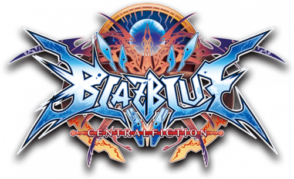

Blazblue Central Fiction

Personagens
Ragna the Bloodedge
Ragna the Bloodedge é o protagonista da série Blazblue e um edgelord característico
Seu estilo de jogo é versátil e variado, apesar de não ser o mais efetivo competitivamente.
Seu estilo de jogo é versátil e variado, apesar de não ser o mais efetivo competitivamente.